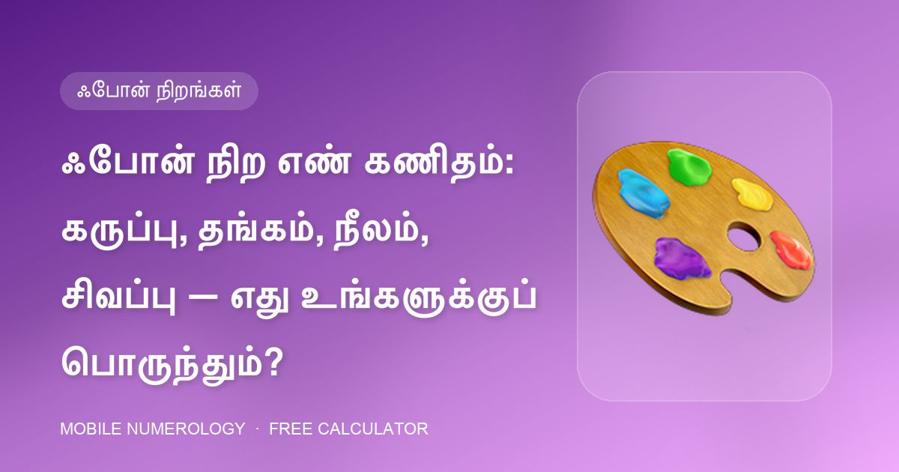

ஃபோன் நிற எண் கணிதம்: கருப்பு, தங்கம், நீலம், சிவப்பு — எது உங்களுக்குப் பொருந்தும்?

உங்கள் தினசரி வாழ்க்கையில் ஒரு கிரகத்தின் ஆற்றலைச் சேர்க்க நிறம் தான் விரைவான வழி, உங்கள் ஃபோன் நீங்கள் அதிகம் தொடும் பொருள். வகுப்பு பத்து ஃபோன் நிறங்களைச் சுயவிவரப்படுத்துகிறது. ஒவ்வொன்றும் என்ன சொல்கிறது — மற்றும் நட்பு-எண் அட்டவணையைப் பயன்படுத்தி யார் ஏற்க வேண்டும், யார் தவிர்க்க வேண்டும் என்பது இதோ.
பத்து ஃபோன் நிறங்கள்
| நிறம் | ஆற்றல் | ஆளுமை | கவனிக்க |
|---|---|---|---|
| கருப்பு | 8 · சனி | ஒதுங்கிய ஆழ்ந்த சிந்தனையாளர், வலுவான சுயக்கட்டுப்பாடு, இலக்குகளில் தீவிரம் | அதிகப் பயன்பாட்டில் தாமதம் மற்றும் அதிக சிந்தனை |
| இளஞ்சிவப்பு | 6 · சுக்கிரன் | அன்பு, பாசம், காதல் மற்றும் ஆதரவை ஈர்க்கும் | மோதல்களைத் தவிர்த்தல், அதிக உணர்ச்சி |
| வெள்ளை | 2 · சந்திரன் | மென்மை, ஆன்மீகம், படைப்பாற்றல் மற்றும் உள்ளுணர்வு | அதிக உணர்திறன், தயக்கம் — நிலைநிறுத்தல் தேவை |
| சாம்பல் / வெள்ளி | 2 & 7 | உணர்ச்சி நுண்ணறிவு, தொழில்நுட்ப நட்பு, இராஜதந்திரம் | அழுத்தத்தில் மனநிலை மாறுதல் |
| தங்கம் | 1 & 3 | நம்பிக்கை, லட்சியம், ஈர்ப்பு, அங்கீகாரம் விரும்பும் | அகந்தை மற்றும் கர்வம் — பணிவு தேவை |
| நீலம் | 3 & 6 | விசுவாசம், ஞானம், அமைதியான மற்றும் நேர்மையான தொடர்பாளர் | விறைப்பு, நீதிபோதனை |
| சிவப்பு | 9 · செவ்வாய் | துணிவு, ஆர்வம், போட்டி மனப்பான்மை கொண்ட செயல்வீரர் | பொறுமையின்மை, அவசர முடிவுகள் |
| ஊதா | 7 · கேது | மர்மம், தொலைநோக்கு, படைப்பாற்றல் | நிலைநிறுத்தல் மற்றும் நடைமுறைச் செயலில் போராட்டம் |
| மஞ்சள் | 1 & 3 | மகிழ்ச்சி, நம்பிக்கை, இயல்பான வழிகாட்டி மற்றும் ஆசிரியர் | அப்பாவித்தனம், அதிக நம்பிக்கை |
| பச்சை | 5 · புதன் | இளமை, நகைச்சுவை, சிறந்த தொடர்பாளர், வணிக மனப்பான்மை | நீண்ட திட்டங்களில் பொறுமையின்மை |
நிறத்தை உங்கள் பிறப்பு எண்ணுடன் பொருத்துதல்
ஒரு நிறத்தின் எண் உங்கள் பிறப்பு எண்ணாகவோ அதன் நட்பு எண்களில் ஒன்றாகவோ இருக்கும்போது அது ஆதரவானது; அதன் எண் பகையாக இருக்கும்போது தவிர்ப்பது நல்லது. சில விரைவான எடுத்துக்காட்டுகள்:
- பிறப்பு எண் 1 (நட்பு 1, 2, 3, 5, 6, 9): கிட்டத்தட்ட எல்லா நிறமும் வேலை செய்யும்; கருப்பு (8) மட்டும் தவிர்க்க வேண்டியது.
- பிறப்பு எண் 2 (நட்பு 1, 3, 5): வெள்ளை, வெள்ளி, தங்கம், நீலம், மஞ்சள் மற்றும் பச்சை ஆதரவானவை; சிவப்பு (9) மற்றும் கருப்பு (8) பகை.
- பிறப்பு எண் 8 (நட்பு 3, 5, 6, 7): நீலம், பச்சை, ஊதா மற்றும் இளஞ்சிவப்பு பொருந்தும்; தங்கம், மஞ்சள், சிவப்பு மற்றும் வெள்ளை குறைவாக உதவும், கருப்பு கூட — உங்கள் சொந்த எண் — அட்டவணையில் 8 இன் பகை.
- பிறப்பு எண் 9 (நட்பு 1, 2, 3, 5, 6): சிவப்பு இயல்பானது, தங்கம் மற்றும் மஞ்சள் அதிகாரத்தைச் சேர்க்கும்; கருப்பு (8) பகை.
தொழில்வாரியாக நிறம்
வகுப்பு நிறங்களை வேலையுடனும் இணைக்கிறது: அழகு, ஃபேஷன் மற்றும் குணப்படுத்துதலுக்கு இளஞ்சிவப்பு; வழிகாட்டிகள் மற்றும் ஆலோசகர்களுக்கு நீலம்; வணிகம் மற்றும் மார்க்கெட்டிங்கிற்கு பச்சை; உள்ளுணர்வு மற்றும் படைப்புத் துறைகளுக்கு ஊதா; கல்வியாளர்கள் மற்றும் ஆன்மீகத் தேடுபவர்களுக்கு மஞ்சள்; நீண்டகாலத் திட்டமிடுபவர்களுக்கு கருப்பு.
ஏற்கனவே "தவறான" நிறம் வைத்திருந்தால்
உங்களுக்கு புதிய ஃபோன் தேவையில்லை. ஆதரவான நிறத்தில் பின்புற கவர் எண் கணித நோக்கங்களுக்கு உடல் நிறத்தை மீறுகிறது, அதனால்தான் வகுப்பு பிளாஸ்டிக் மற்றும் உலோக கவர்களுக்கு நிறக் குறிப்புகள் தருகிறது. ஆதரவான கவர் நிறத்தை உங்கள் எண்ணுக்கான வால்பேப்பருடன் இணைத்தால் ஃபோன் முழுவதும் ஒத்திசைகிறது.
30 வினாடிகளில் உங்கள் எண்ணைச் சரிபார்க்கவும்
எங்கள் இலவச கால்குலேட்டர் உங்கள் மொபைல் எண்ணின் 10 இடங்களையும் ஆய்வு செய்து, உங்கள் பிறப்பு & விதி எண்களைக் கண்டறிந்து, அதிர்ஷ்ட பின், கடவுச்சொல், வால்பேப்பர் மற்றும் கவரைப் பரிந்துரைக்கிறது — நீங்கள் உள்ளிடுவது எதுவும் உங்கள் உலாவியை விட்டு வெளியேறாது.
அடிக்கடி கேட்கப்படும் கேள்விகள்
கருப்பு ஃபோன் நிறம் துரதிர்ஷ்டமா?
கருப்பு சனி (8) ஆற்றலைச் சுமக்கிறது: ஒழுக்கம் மற்றும் திட்டமிடலுக்கு சிறந்தது, ஆனால் பகை எண் 8 உள்ளவர்களுக்கு — பிறப்பு எண்கள் 1, 2, 4, 8 மற்றும் 9 — கனமானது. அவர்களுக்கு நீல அல்லது பச்சை கவர் சிறந்த தினசரித் துணை.
வணிகத்திற்கு எந்த ஃபோன் நிறம் சிறந்தது?
பச்சை (புதன், தொடர்பு மற்றும் வர்த்தகம்) பாரம்பரியத் தேர்வு; நட்பு எண்களில் 1 மற்றும் 3 உள்ளவர்களுக்கு தங்கம் அதிகாரத்தைச் சேர்க்கும்.
வெளிப்படையான கவர் எதையும் மாற்றுமா?
வெளிப்படையான கவர் ஃபோனின் சொந்த நிறத்தைக் காட்ட அனுமதிக்கிறது, எனவே உடல்-நிற வாசிப்பு பொருந்தும்.